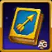
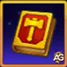
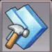
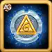
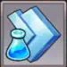
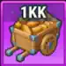
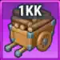

🌌 アビス・スプレンダー完全イベントガイド
アビス・スプレンダーは、ヒーローウォーズアライアンスでアウトランドとタワーを進めながらタイタナイトを集め、スキンストーンチェストやルーンスフィアなどの貴重な報酬を獲得する特別イベントだ。レルム側では部隊訓練と食料採集を通じて、追加の資源や加速アイテムも手に入る。
イベントの注目ポイント
 スキンストーンチェスト - すべてのクエストで小型と大型の両方を獲得できる
スキンストーンチェスト - すべてのクエストで小型と大型の両方を獲得できる ルーンスフィア - タワー、エネルギー、タイタン鍛造のクエストで入手可能
ルーンスフィア - タワー、エネルギー、タイタン鍛造のクエストで入手可能- 🏰 軍隊訓練とレルム資源 - 食料、木材、石材、鉄、各種加速アイテム
1. ドミニオンの呼び声
目的: イベント期間中にログインして、スキンストーンチェスト、シーズンポイント、軍隊訓練マニュアルを獲得する。
戦略: 毎日欠かさずログインするのが大事。イベントは 3 日間なので、3 日すべてにログインして報酬を取り切ろう。短時間のログインでもカウントされる。
このクエストはイベント 3 日間のあいだに達成できる。
| タスク (ログイン) | 報酬 1 | 報酬 2 | 報酬 3 |
|---|---|---|---|
| イベント期間中に 1 回ログイン | 小型スキンストーンチェスト x5 |
 シーズンポイント x20 シーズンポイント x20 |
 射手マニュアル x2 |
| イベント期間中に 2 回ログイン | 小型スキンストーンチェスト x5 |
シーズンポイント x20 |
 槍兵マニュアル x2 槍兵マニュアル x2 |
| イベント期間中に 3 回ログイン | 小型スキンストーンチェスト x5 |
シーズンポイント x20 |
 歩兵マニュアル x2 |
| 合計 | 小型スキンストーンチェスト x15 | シーズンポイント x60 | マニュアル 6 個 |
2. 深奥に封じられしもの
目的: アウトランド宝箱を開けて、スキンストーンチェスト、シーズンポイント、アーティファクトコイン、レルム資源を獲得する。
戦略: イベント開始前にアウトランド宝箱を貯めておこう。自分のチームにとって価値の高い報酬を落とすアウトランドボスを優先すると効率がいい。
このクエストはイベント 3 日間のあいだに達成できる。
| タスク (アウトランド宝箱を開く) | 報酬 1 | 報酬 2 | 報酬 3 |
|---|---|---|---|
| アウトランドで宝箱を 5 個開く | 小型スキンストーンチェスト x5 |  食料 x20 (1k) 食料 x20 (1k) |  木材 x20 (1k) 木材 x20 (1k) |
| アウトランドで宝箱を 15 個開く | 小型スキンストーンチェスト x10 | シーズンポイント x45 |  建設加速 1 分 x2 |
| アウトランドで宝箱を 25 個開く |  大型スキンストーンチェスト x2 大型スキンストーンチェスト x2 |  アーティファクトコイン x150 |  研究加速 1 分 x5 |
| アウトランドで宝箱を 40 個開く | 大型スキンストーンチェスト x4 | シーズンポイント x50 |  万能加速 1 分 x2 万能加速 1 分 x2 |
| アウトランドで宝箱を 55 個開く | 大型スキンストーンチェスト x5 |  食料 x25 (10k) 食料 x25 (10k) |  木材 x25 (10k) 木材 x25 (10k) |
| アウトランドで宝箱を 75 個開く | 大型スキンストーンチェスト x6 | シーズンポイント x50 | 建設加速 1 分 x5 |
| アウトランドで宝箱を 100 個開く | 大型スキンストーンチェスト x6 |  食料 x5 (100k) 食料 x5 (100k) |  木材 x5 (100k) 木材 x5 (100k) |
| アウトランドで宝箱を 125 個開く | 大型スキンストーンチェスト x8 | シーズンポイント x50 | 建設加速 1 分 x5 |
| アウトランドで宝箱を 175 個開く | 大型スキンストーンチェスト x8 | アーティファクトコイン x300 | 研究加速 1 分 x5 |
| アウトランドで宝箱を 240 個開く | 大型スキンストーンチェスト x10 | シーズンポイント x75 | 万能加速 1 分 x5 |
| アウトランドで宝箱を 325 個開く | 大型スキンストーンチェスト x10 |  石材 x150 (1k) 石材 x150 (1k) |  鉄 x3 (10k) 鉄 x3 (10k) |
| アウトランドで宝箱を 440 個開く | 大型スキンストーンチェスト x12 | シーズンポイント x100 | 石材 x225 (1k) |
| アウトランドで宝箱を 580 個開く | 大型スキンストーンチェスト x12 | アーティファクトコイン x400 |  鉄 x75 (1k) 鉄 x75 (1k) |
| アウトランドで宝箱を 750 個開く | 大型スキンストーンチェスト x14 | シーズンポイント x125 |  建設加速 5 分 x7 建設加速 5 分 x7 |
| アウトランドで宝箱を 1,000 個開く | 大型スキンストーンチェスト x16 | アーティファクトコイン x450 |  研究加速 5 分 x7 研究加速 5 分 x7 |
| アウトランドで宝箱を 1,250 個開く | 大型スキンストーンチェスト x20 | シーズンポイント x150 |  万能加速 5 分 x8 万能加速 5 分 x8 |
| 合計 | 小型スキンストーンチェスト x15 + 大型スキンストーンチェスト x133 | シーズンポイント x645 + アーティファクトコイン x1,300 | 資源と加速 |
3. 栄誉の証
目的: VIP ポイントを獲得して、大型スキンストーンチェストとレルム資源を手に入れる。
戦略: 関連アクティビティやデイリークエストをこなして VIP ポイントを貯めよう。このクエストは毎日リセットされるので、毎日達成するのが報酬最大化のコツだ。
イベント終了まで毎日達成しよう。
| タスク (VIP ポイント獲得) | 報酬 1 | 報酬 2 | 報酬 3 |
|---|---|---|---|
| VIP ポイントを 100 獲得 | 大型スキンストーンチェスト x3 | 食料 x25 (1k) | 木材 x25 (1k) |
| VIP ポイントを 200 獲得 | 大型スキンストーンチェスト x4 | 食料 x50 (1k) | 木材 x50 (1k) |
| VIP ポイントを 400 獲得 | 大型スキンストーンチェスト x6 | 食料 x75 (1k) | 木材 x75 (1k) |
| VIP ポイントを 800 獲得 | 大型スキンストーンチェスト x8 | 食料 x1 (100k) | 木材 x1 (100k) |
| VIP ポイントを 1,600 獲得 | 大型スキンストーンチェスト x10 | 食料 x13 (10k) | 木材 x13 (10k) |
| VIP ポイントを 2,600 獲得 | 大型スキンストーンチェスト x12 | 食料 x15 (10k) | 木材 x15 (10k) |
| VIP ポイントを 4,500 獲得 | 大型スキンストーンチェスト x16 | 食料 x25 (10k) | 木材 x25 (10k) |
| VIP ポイントを 7,000 獲得 | 大型スキンストーンチェスト x20 |  食料 x1 (1,000,000) |  木材 x1 (1,000,000) |
| VIP ポイントを 10,000 獲得 | 大型スキンストーンチェスト x30 |  石材 x4 (100k) 石材 x4 (100k) |  鉄 x1 (100k) 鉄 x1 (100k) |
| 合計 | 大型スキンストーンチェスト x109 | 食料 x209 + 石材 x4 (100k) | 木材 x206 + 鉄 x1 (100k) |
4. タワーの戦利品
目的: タワー宝箱を開けて、小型スキンストーンチェスト、シーズンポイント、ルーンスフィア、加速アイテムを獲得する。
戦略: 毎日できるだけ高い階層まで進もう。レアなオレンジ装備入りの宝箱を優先すると効率がいい。このクエストは日ごとにリセットされる。
イベント終了まで毎日達成しよう。
| タスク (タワー宝箱を開く) | 報酬 1 | 報酬 2 | 報酬 3 |
|---|---|---|---|
| タワーで宝箱を 2 個開く | 小型スキンストーンチェスト x3 | シーズンポイント x20 | 建設加速 1 分 x2 |
| タワーで宝箱を 5 個開く | 小型スキンストーンチェスト x5 | 食料 x20 (1k) | 木材 x20 (1k) |
| タワーで宝箱を 8 個開く | 小型スキンストーンチェスト x7 | シーズンポイント x20 | 建設加速 5 分 x1 |
| タワーで宝箱を 12 個開く | 小型スキンストーンチェスト x10 | ルーンスフィア x25 | 研究加速 5 分 x1 |
| タワーで宝箱を 18 個開く | 小型スキンストーンチェスト x15 | アーティファクトコイン x200 | 研究加速 5 分 x1 |
| タワーで宝箱を 25 個開く | 小型スキンストーンチェスト x20 | ルーンスフィア x50 | 万能加速 5 分 x1 |
| タワーで宝箱を 33 個開く | 小型スキンストーンチェスト x30 | アーティファクトコイン x400 | 万能加速 5 分 x2 |
| 合計 | 小型スキンストーンチェスト x90 | ルーンスフィア x75 + アーティファクトコイン x600 | 各種加速アイテム |
5. エネルギーバースト
目的: キャンペーンミッションでエネルギーを使い、スキンストーンチェスト、レルム資源、加速アイテムを獲得する。
戦略: 役立つアイテムが落ちるキャンペーンミッションにエネルギーを使うと効率がいい。ポーションは使いどころを見て投入しよう。
このミッションは毎日達成できる。
| タスク (エネルギー消費) | 報酬 1 | 報酬 2 | 報酬 3 |
|---|---|---|---|
| エネルギーを 100 消費 | 小型スキンストーンチェスト x2 | 食料 x5 (1k) | 木材 x5 (1k) |
| エネルギーを 200 消費 | 小型スキンストーンチェスト x3 | 食料 x10 (1k) | 木材 x10 (1k) |
| エネルギーを 300 消費 | 小型スキンストーンチェスト x5 | 食料 x5 (10k) | 木材 x5 (10k) |
| エネルギーを 500 消費 | 小型スキンストーンチェスト x7 | 食料 x7 (10k) | 木材 x7 (10k) |
| エネルギーを 750 消費 | 小型スキンストーンチェスト x9 | 食料 x3 (100k) | 木材 x3 (100k) |
| エネルギーを 1,000 消費 | 小型スキンストーンチェスト x12 | 研究加速 5 分 x1 | 万能加速 5 分 x1 |
| エネルギーを 1,500 消費 | 小型スキンストーンチェスト x15 | 建設加速 5 分 x1 |  石材 x9 (10k) 石材 x9 (10k) |
| エネルギーを 2,000 消費 | 小型スキンストーンチェスト x20 | ルーンスフィア x50 | 鉄 x1 (100k) |
| 合計 | 小型スキンストーンチェスト x73 | 食料 x30 + ルーンスフィア x50 + 加速 | 木材 x30 + 石材 + 鉄 |
6. タイタン鍛造
目的: ギルドダンジョンでタイタナイトを集め、小型スキンストーンチェスト、シーズンポイント、ルーンスフィア、レルム資源を獲得する。
戦略: ギルドメンバーと連携してダンジョン周回回数を増やそう。タイタナイトが多く取れる階層を優先すると効率がいい。必要総量は 800 タイタナイト。
このクエストはイベント期間中に達成できる。
| タスク (タイタナイト収集) | 報酬 1 | 報酬 2 | 報酬 3 |
|---|---|---|---|
| ギルドダンジョンでタイタナイトを 65 集める | 小型スキンストーンチェスト x5 | シーズンポイント x20 | 食料 x20 (1k) |
| ギルドダンジョンでタイタナイトを 130 集める | 小型スキンストーンチェスト x5 | 食料 x25 (1k) | 木材 x25 (1k) |
| ギルドダンジョンでタイタナイトを 190 集める | 小型スキンストーンチェスト x7 | シーズンポイント x25 | 木材 x20 (1k) |
| ギルドダンジョンでタイタナイトを 250 集める | 小型スキンストーンチェスト x10 | 食料 x25 (1k) | 木材 x75 (1k) |
| ギルドダンジョンでタイタナイトを 350 集める | 小型スキンストーンチェスト x10 | 食料 x10 (10k) | 木材 x10 (10k) |
| ギルドダンジョンでタイタナイトを 450 集める | 小型スキンストーンチェスト x15 | 食料 x15 (10k) | 木材 x15 (10k) |
| ギルドダンジョンでタイタナイトを 550 集める | 小型スキンストーンチェスト x15 | ルーンスフィア x75 | 石材 x57 (1k) |
| ギルドダンジョンでタイタナイトを 650 集める | 小型スキンストーンチェスト x20 | 食料 x3 (100k) | 木材 x3 (100k) |
| ギルドダンジョンでタイタナイトを 800 集める | 小型スキンストーンチェスト x25 | ルーンスフィア x125 | 鉄 x25 (1k) |
| 合計 (タイタナイト 800) | 小型スキンストーンチェスト x112 | ルーンスフィア x200 + シーズンポイント x45 | 資源 x250 |
7. 安定した一射
目的: 射手部隊を訓練して、スキンストーンチェスト、レルム資源、加速アイテムを獲得する。
戦略: イベント開始前に部隊訓練用の資源を準備しておこう。射手訓練に集中すると報酬を最大限に取りやすい。必要総数は 48,000 射手。
このクエストはイベント期間中に達成できる。
| タスク (射手を訓練) | 報酬 1 | 報酬 2 | 報酬 3 |
|---|---|---|---|
| 射手を 2,400 訓練 | 小型スキンストーンチェスト x1 | 食料 x25 (1k) | 木材 x25 (1k) |
| 射手を 4,050 訓練 | 小型スキンストーンチェスト x2 | 食料 x31 (1k) | 木材 x31 (1k) |
| 射手を 8,250 訓練 | 小型スキンストーンチェスト x4 | 食料 x6 (10k) | 木材 x6 (10k) |
| 射手を 10,500 訓練 | 小型スキンストーンチェスト x5 |  レリックの欠片 x1 レリックの欠片 x1 | 建設加速 5 分 x2 |
| 射手を 16,500 訓練 | 小型スキンストーンチェスト x6 | 食料 x18 (10k) | 木材 x18 (10k) |
| 射手を 24,000 訓練 | 小型スキンストーンチェスト x8 | 食料 x30 (10k) | 木材 x30 (10k) |
| 射手を 30,750 訓練 | 小型スキンストーンチェスト x12 | 食料 x6 (100k) | 木材 x6 (100k) |
| 射手を 48,000 訓練 | 小型スキンストーンチェスト x18 | 石材 x19 (10k) | 鉄 x7 (10k) |
| 合計 (射手 48,000) | 小型スキンストーンチェスト x56 | 食料 x136 + レリックの欠片 x1 | 木材 x125 + 石材 + 鉄 |
8. 豊穣の野
目的: マップ上で食料を採集し、スキンストーンチェストとレルム資源を獲得する。
戦略: マップ上の食料を継続的に回収しよう。食料密度が高い採集地点を優先すると効率がいい。必要総量は食料 36,000,000。
このクエストはイベント期間中に達成できる。
| タスク (マップ上で食料を採集) | 報酬 1 | 報酬 2 | 報酬 3 |
|---|---|---|---|
| 食料を 2,325,000 採集 | 小型スキンストーンチェスト x2 | 食料 x5 (10k) | 木材 x5 (10k) |
| 食料を 3,000,000 採集 | 小型スキンストーンチェスト x3 | 食料 x10 (10k) | 木材 x10 (10k) |
| 食料を 6,000,000 採集 | 小型スキンストーンチェスト x4 | 食料 x1 (100k) | 木材 x1 (100k) |
| 食料を 12,000,000 採集 | 小型スキンストーンチェスト x5 | 食料 x2 (100k) | 木材 x2 (100k) |
| 食料を 24,000,000 採集 | 小型スキンストーンチェスト x6 | 食料 x4 (100k) | 木材 x4 (100k) |
| 食料を 36,000,000 採集 | 小型スキンストーンチェスト x7 | 石材 x1 (100k) | 鉄 x30 (1k) |
| 合計 (食料 36,000,000) | 小型スキンストーンチェスト x27 | 食料 x23 + 石材 x1 (100k) | 木材 x52 + 鉄 x30 |